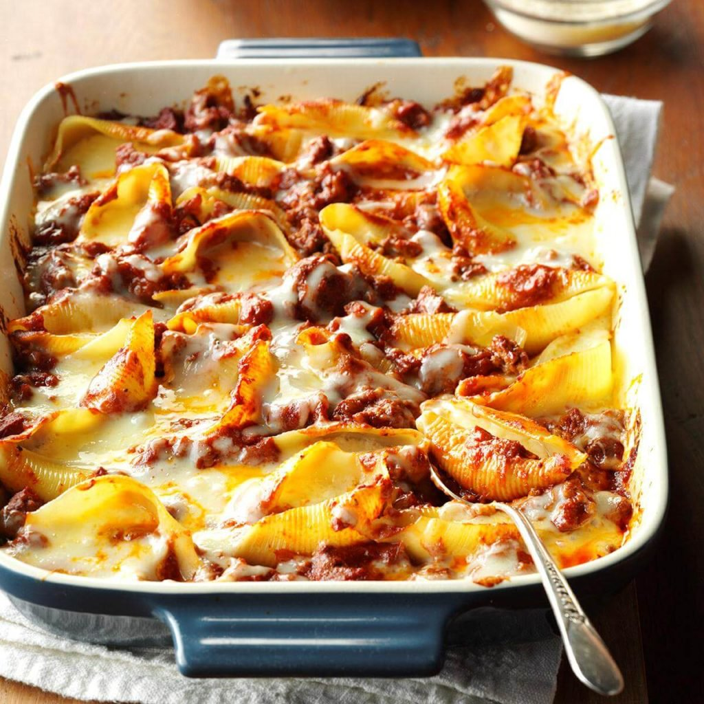

Italian Stuffed Shells Authenic Pasta Carbonara Homemade Manicotti There are many more, such as ribbon-cut noodles, short-cut extruded pasta, decorative shaped pasta, minute pasta, and stuffed pasta. With that, there are a multitude of subcategories of these types of pasta.
